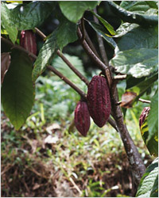
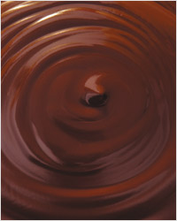
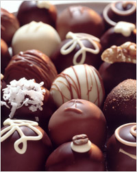

История сладостей началась, по крайней мере, 4 тысячи лет назад с египетских десертов, описанных в дошедших до нас папирусах. Установлено, что засахаренные фрукты продавались на рынках в 1566 г. до н.э. О шоколаде мир узнал, когда древние племена Майя и Ацтеков обнаружили чудесные свойства какао. Появившись в долине Амазонки или Ориноко, шоколад долгое время оставался неизвестным в Старом Свете. В 600 г. до н.э. Майя мигрировали в северную часть Южной Америки и разбили на территории современного Юкатана первые плантации какао.
Существует версия, что Майя были знакомы с какао за несколько веков до этого, используя дикорастущие какао-бобы для счета и как денежный эквивалент. Неизвестно, кто именно изобрел первый шоколад. И Майя, и Ацтеки делали из какао-бобов напиток ксокоатль. Согласно легенде Ацтеков, семена какао попали на землю из рая, поэтому оно дает силу и мудрость всем, кто ест его плоды.
Ацтеки верили, что бог Кетцалькоатль, прибывший на землю на луче утренней звезды, принес дерево какао в подарок людям и научил жарить и молоть его плоды и готовить питательную пасту, из которой можно делать напиток чоколатль (горькая вода). Чтобы изменить вкус горького напитка, Ацтеки добавляли в него перец и другие пряности. Современное слово «шоколад», таким образом, происходит от Майского слова «ксокоатль» (какао) и Ацтекского «чоколатль». В языке современных мексиканских индейцев сохранилось слово «чоколатль», обозначающее пену с водой.
Бобы какаоМного веков шоколад существовал только в жидкой форме. Этот напиток был частью магических ритуалов и брачных церемоний.  Некоторые древние мексиканские племена верили, что шоколаду покровительствуют богиня пищи Тонакатекутли и богиня воды Кальчиутлук. Каждый год они приносили богиням человеческие жертвы, накормив жертву перед смертью какао.
Шведский натуралист Карл Линней, занимавшийся классификацией растений, изменил древнее название какао на «theobroma», что переводится с греческого как «пища богов». Считается, что первым, кто привез какао в Европу, был Колумб. Из своего четвертого путешествия в Новый Свет он привез какао бобы в подарок королю Фердинанду, но на фоне других сокровищ «пище богов» не придали должного значения.
Первым европейцем, попробовавшим оригинальный шоколад был Кортез, посетивший императора Монтесуму в Мексике.
Некоторые древние мексиканские племена верили, что шоколаду покровительствуют богиня пищи Тонакатекутли и богиня воды Кальчиутлук. Каждый год они приносили богиням человеческие жертвы, накормив жертву перед смертью какао.
Шведский натуралист Карл Линней, занимавшийся классификацией растений, изменил древнее название какао на «theobroma», что переводится с греческого как «пища богов». Считается, что первым, кто привез какао в Европу, был Колумб. Из своего четвертого путешествия в Новый Свет он привез какао бобы в подарок королю Фердинанду, но на фоне других сокровищ «пище богов» не придали должного значения.
Первым европейцем, попробовавшим оригинальный шоколад был Кортез, посетивший императора Монтесуму в Мексике.
Шоколад был напитком для богатых и стоил до 15 шиллингов за фунт. Как и у Майя, плоды какао-дерева стали валютой в некоторых странах. В Никарагуа можно было купить кролика за 10 какао-бобов и хорошего раба за 100. Ведущие доктора 17-18 вв. прописывали своим богатым пациентам шоколад как общеукрепляющее средство и лекарство от многих болезней. Шоколад обычно прописывали детям и мужчинам, добавляя в напиток молоко, вино, специи, и даже пиво. В 1674 году появился мягкий шоколад в виде батончиков и рулетов. Первая плитка шоколада была изготовлена компанией Fry & Sons под брендом Chocolat Delicieux a Manger. Первый молочный шоколад появился в Швейцарии, после чего швейцарская фирма Nestle завоевала популярность. В 1879 Рудольф Линдт из Берна выпустил шоколад, который таял во рту. Он изобрел конширование - способ медленного нагревания шоколада - и стал добавлять в свою продукцию больше какао масла. Первый шоколад с начинкой появился в 1913 г. Плитка твердого шоколадаВ середине 18 в. шоколад стал дешевле и доступнее всем слоям населения благодаря расширению плантаций и механизации производства. Изобретение пресса для получения какао-масла в 1828 г. улучшило качество шоколада и сделало его еще более доступным. Во время индустриальной революции началось промышленное производство шоколада. В 1765 г. шоколад появился в Северной Америке. Исаак Дизраэли писал о шоколаде: «Испанцы привезли шоколад из Мексики, где он был грубой смесью молотых зерен какао, индейской кукурузы и специй. Испанцам понравилась питательность шоколада, и они усовершенствовали напиток сахаром и ароматизаторами.» По версии компании Nestle, своей популярностью шоколад обязан четырем событиям: получение какао-порошка в 1828 г., снижение акцизов, усовершенствование транспортировки и изобретение твердого шоколада. Артур Кнапп, исследователь истории шоколада, отмечает особую важность изобретения пресса для отжима какао-зерен. В 19 веке лидером по производству какао-бобов была Венесуэла, сейчас половина какао выращивается в Бразилии и в Кот-д’Ивуаре.
Лидером по производству шоколада сейчас считаются США; по потреблению шоколада на душу населения на первом месте находится Швейцария. В мире ежегодно съедается 600000 тонн шоколада. Производство шоколада – одна из самых прибыльных отраслей пищевой промышленности. Шоколадные конфеты В 1980 г мир потрясла история промышленного шпионажа. Ученик швейцарской компании Suchard-Tobler безуспешно пытался продать рецепт шоколада производителям из России, Китая, Саудовской Аравии и других стран. Шоколад – один из немногих продуктов, переживших трансформацию от горького напитка индейцев до изысканного десерта знати и продукта массового потребления, выпускаемого в широчайшем ассортименте. Кроме вкуса и коммерческой ценности шоколад обладает свойством поднимать настроение и придавать силы.